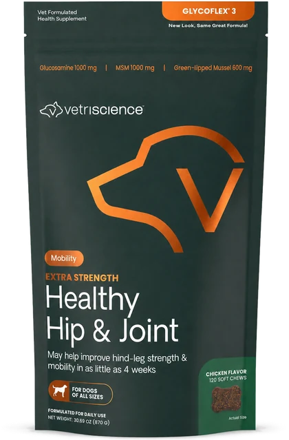
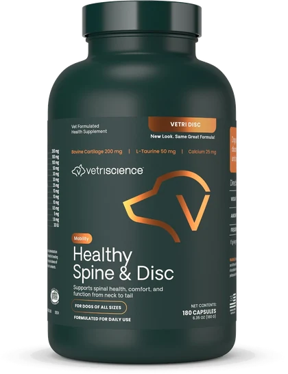

Suplementos VetriScience · Colombia
Cuidamos las articulaciones y la columna de tu perro
Traemos a Colombia las fórmulas de VetriScience, una marca veterinaria fabricada en Vermont. Si no tienes claro cuál le sirve al tuyo, escríbenos antes de comprar y lo miramos juntos.
- Envío a todo el país
- Asesoría antes de comprar
- PSE, Nequi y tarjetas
Dos fórmulas
¿Qué le está pasando a tu perro?
Cada una está hecha para algo distinto. Si dudas entre las dos, la respuesta suele estar en dónde le duele.

Caderas y articulacionesGlycoFlex 3
Para perros que cojean, se levantan con dificultad o dejaron de moverse como antes.
$249.900 desde $1.262 al día Ver producto
Columna y discosVetriDisc
Para perros con hernia discal, IVDD, discopatía o razas de columna larga.
$179.900 desde $999 al día Ver productoLos precios incluyen envío. El costo por día cambia según el peso del perro: en cada ficha hay una calculadora que te da la cifra exacta para el tuyo.
Elegir bien empieza por saber qué le está pasando a tu perro.
Hablemos
Escríbenos y te respondemos
Somos un equipo pequeño y contestamos nosotros mismos. Elige por dónde empezar:
Quiénes somos
Un equipo pequeño que importa directo
Traemos desde Estados Unidos los suplementos de VetriScience Laboratories, fabricados en Vermont. Los pedimos directamente porque en Colombia todavía no hay distribución local, así que lo que te llega es el producto original.
- Antes de que compres te ayudamos a escoger. Si tu caso no es para ninguno de los dos, te lo decimos.
- Después de que compres seguimos ahí: dosis, tiempos y cuándo conviene pedir el siguiente.
- Son suplementos nutricionales, no medicamentos. Acompañan al veterinario, no lo reemplazan.
Sobre la evidencia
Léelo por tu cuenta
El mejillón de labio verde, ingrediente principal de la fórmula para caderas y articulaciones, ha sido estudiado en perros con artrosis en ensayos publicados. Estos son algunos:
- Improvement of arthritic signs in dogs fed green-lipped mussel (Perna canaliculus) Bierer y Bui · The Journal of Nutrition · 2002
- Influence of green lipped mussels (Perna canaliculus) in alleviating signs of arthritis in dogs Bui y Bierer · Veterinary Therapeutics · 2003
- Clinical efficacy and tolerance of an extract of green-lipped mussel in dogs presumptively diagnosed with degenerative joint disease Pollard y col. · New Zealand Veterinary Journal · 2006
Estos estudios evalúan el ingrediente, no nuestros productos, y sus resultados no son unánimes. Son suplementos nutricionales: no son medicamentos y no reemplazan la consulta veterinaria.
- Envío a todo Colombia
- PSE, Nequi y tarjetas
- Producto original importado
- Asesoría por WhatsApp